Install WordPress di Ubuntu Server
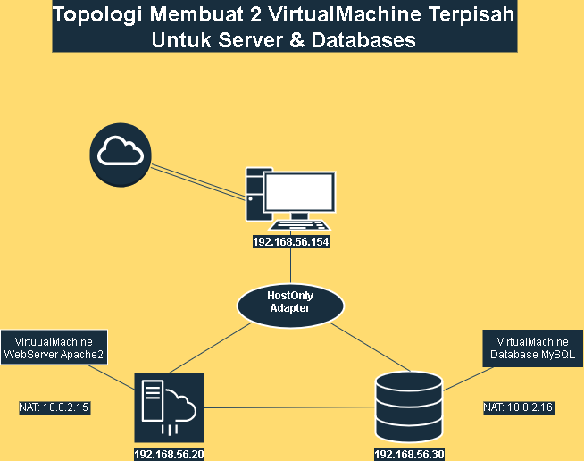
Setup :
1. Virtual Box
2. ISO Ubuntu Server
Install VirtualBox dan Ubuntu Server
Untuk Instalasi VirtualBox dan Ubuntu Server bisa dilihat di link berikut: https://linuxhint.com/install-ubuntu22-04-virtual-box/ Setelah Melakukan instalasi lanjut dengan SetUp VM Server & VM Database.SetUp Server:
1. Lakukan Update & Upgrade:
Dengan Command:
 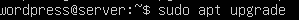
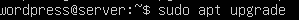2. Selanjutnya install web server apache2
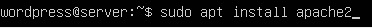
3. Test apakah status web server sudah aktif dengan menjalankan command:

dan juga bisa dengan memasukan ip localhost ke browser 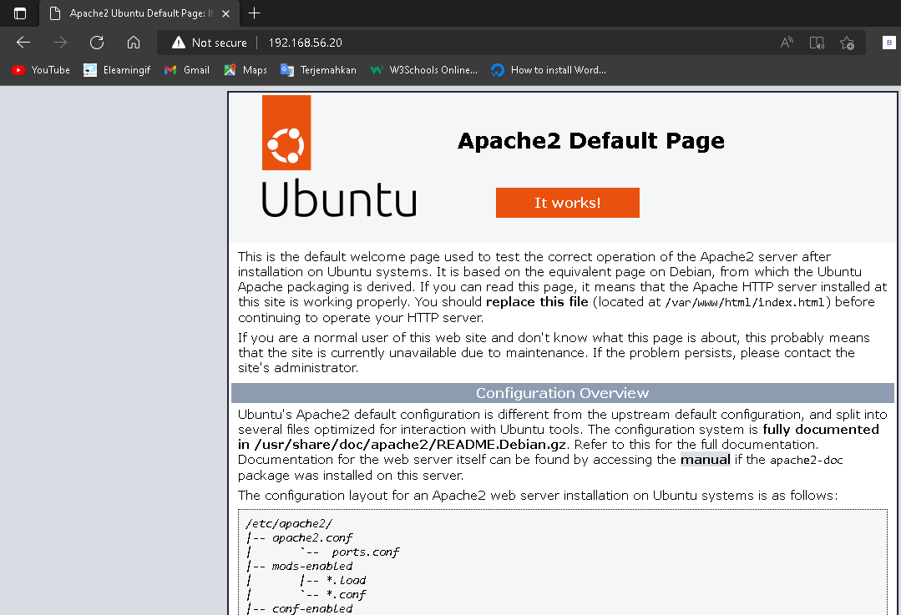
4. Selanjutnya install PHP dan MysQl-client. 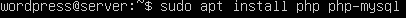 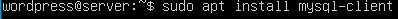
Lanjut dengan SetUp VM Database:
1. Lakukan Update & Upgrade sama seperti server sebelumnya.
2. Selanjutnya install Mysql-server dengan command: 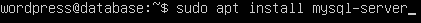 *Note: untuk instalasi lebih lanjut mysql-server bisa dilihat di link berikut: https://www.digitalocean.com/community/tutorials/how-to-install-mysql-on-ubuntu-22-04
Menghubungkan Server dengan database
1. SetUp IP ke-2 VM, disini saya menggunakan 2 Network Adapter yaitu, HostOnly & NAT di kedua VM.untuk konfigurasi ip ke static bisa menggunakan command: 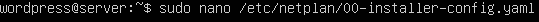 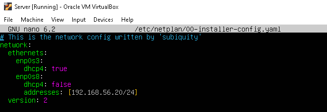 2. Save dengan menekan CTRl+x dan y lalu ENTER, dan jalankan command: sudo netplan apply untuk melihat apakah ada error.
3. Ulangi untuk VM ke-2.
4. Lanjut dengan masuk ke mysql dengan akses root, lalu membuat user & database mysql.
 note: Pada bagian IP isi dengan IP web server.
note: Pada bagian IP isi dengan IP web server.5. lanjut dengan setting Bind address di mysqld.cnf. Ganti dengan IP database 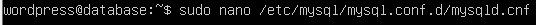 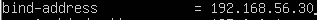 6. Test login mysql di VM webserver: 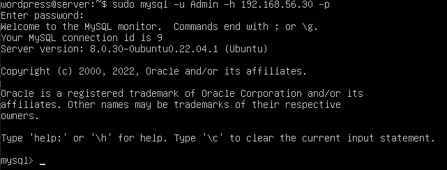 Jika berhasil maka vm server & database sudah terhubung.
Instalasi Wordpress CMS
Untuk melakukan wordpress bisa dilihat di website berikut: How To Install Wordpress On UbuntuMenambahkan 2 wordpress atau lebih di 1 vm
Untuk menambah web wordpress di 1 vm bisa dilakukan dengan cara berikut:1. Download wordpress. 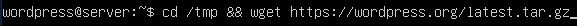 lalu extract file wordpress.
 2. copy file yang di extract tadi ke /var/www/html.
2. copy file yang di extract tadi ke /var/www/html.  3. untuk menambahkan wordpress ke-2 dan ke-3 copy kembali file extract wordpres tadi ke folder baru di /var/www/html/[nama-folder-baru]. contoh:
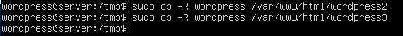
4. Jalankan perintah di bawah ini untuk mengubah kepemilikan direktori 'wordpress'. 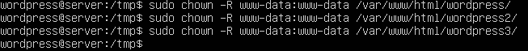
5. Ganti file permissions dari folder Wordpress. 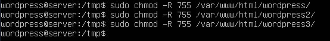
6. Buat direktori 'Uploads'. 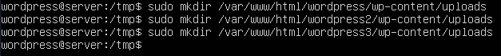
7. Ganti file permissions dari direktori 'Uploads' 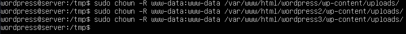
8. Buka browser dan masukan url ip address server ip-server/folder-wordpress misal:
3. untuk menambahkan wordpress ke-2 dan ke-3 copy kembali file extract wordpres tadi ke folder baru di /var/www/html/[nama-folder-baru]. contoh:
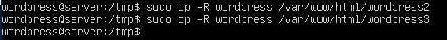
4. Jalankan perintah di bawah ini untuk mengubah kepemilikan direktori 'wordpress'. 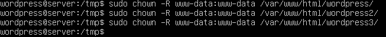
5. Ganti file permissions dari folder Wordpress. 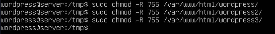
6. Buat direktori 'Uploads'. 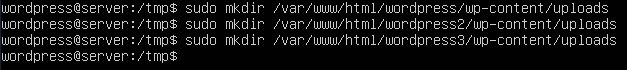
7. Ganti file permissions dari direktori 'Uploads' 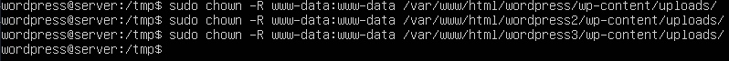
8. Buka browser dan masukan url ip address server ip-server/folder-wordpress misal:"ip-server/wordpress" or "ip-server/wordpress2" 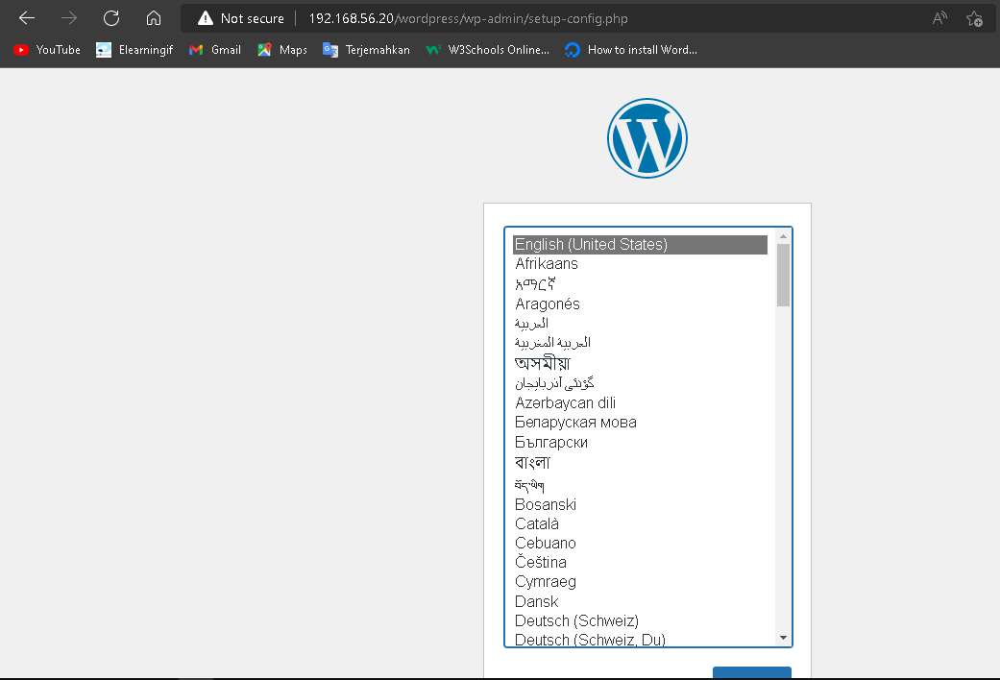
Lanjut dengan setting wordpress
Masukan nama database, user, password, serta ip database sesuai dengan yang telah kita buat sebelumnya.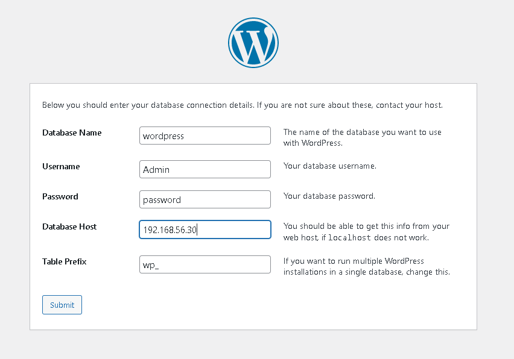 Lalu buat user dan judul untuk website 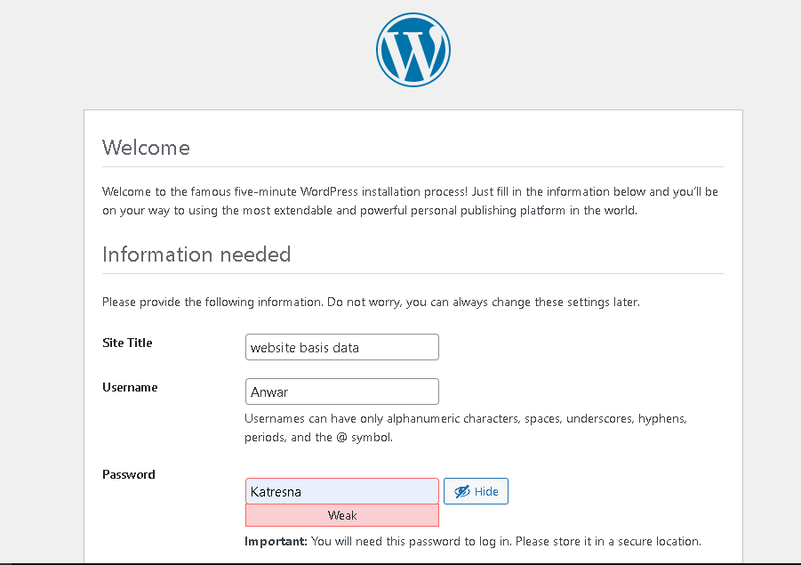 Dan akhrinya wordpress siap dijalankan 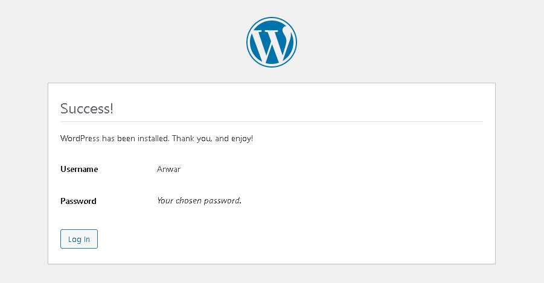